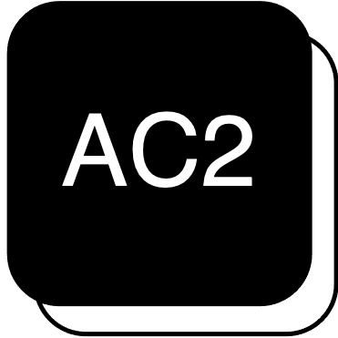

HPC × DPU × DATA COMPRESSION
小林 泰雅
TAIGA KOBAYASHI
東京科学大学 情報理工学院 数理・計算科学系 修士課程

Advanced Computing ACceleration (AC2) Laboratory（主宰：小林 諒平 准教授）大規模システムの通信最適化を研究しています。FPGA・DPU・機械学習・データ圧縮に関心があります。 現在は、マルチGPUでのLLM学習を対象に NVIDIA BlueField DPU 上での通信データ圧縮を研究しており、 将来の疎・不規則なアクセラレータワークロードに向けた通信基盤を見据えています。

SCROLL
01研究
DPU 上の通信圧縮の特性評価（分散学習向け）
NVIDIA BlueField-3 DPU の Arm コア上に NetZIP 型の可逆圧縮パイプライン （バイトグループ化＋LZ4、16コア並列、チャンク単位の圧縮・転送オーバーラップ）を実装し、 同一 RDMA 経路の無圧縮通信と end-to-end で公平に比較。無圧縮ベースラインが RDMA バッファのページ構成で大きく変わること（4 KiB: 10.9 GB/s / THP: 24.6 GB/s）、 送信側処理が約 9 GB/s で律速となり専用ハードなしでは無圧縮を上回れないことを定量化し、 設計指針を提示しました。
DPURDMA可逆圧縮分散学習研究の関心
FPGA ／ DPU ／ 機械学習 ／ データ圧縮
02発表業績
国際会議・ワークショップ（査読あり）
Taiga Kobayashi, Tomohiro Ueno, Ryohei Kobayashi, “Characterizing Communication Compression on NVIDIA BlueField-3 DPU for Distributed Training,” Workshop Proceedings of the 55th International Conference on Parallel Processing (ICPP Workshops ’26), SPIN-NVSC Workshop, Singapore, Sep. 2026（発表予定）. DOI
Taiga Kobayashi, Tomohiro Ueno, Ryohei Kobayashi, “Characterizing Communication Compression on NVIDIA BlueField-3 DPU for Distributed Training,” Workshop Proceedings of the 55th International Conference on Parallel Processing (ICPP Workshops ’26), SPIN-NVSC Workshop, Singapore, Sep. 2026（発表予定）. DOI
国内研究会
小林 泰雅, 上野 知洋, 小林 諒平, 「分散学習に向けた NVIDIA BlueField-3 DPU 上の通信圧縮の特性評価」, 情報処理学会 研究報告（SWoPP 2026, HPC研究会）, 2026年7月. 情報学広場
小林 泰雅, 上野 知洋, 小林 諒平, 「分散学習に向けた NVIDIA BlueField-3 DPU 上の通信圧縮の特性評価」, 情報処理学会 研究報告（SWoPP 2026, HPC研究会）, 2026年7月. 情報学広場
03経歴
-
2022年4月東京科学大学 学士課程 入学
-
2026年3月東京科学大学 学士課程 卒業
-
2026年4月 – 現在東京科学大学 情報理工学院 数理・計算科学系 修士課程（2028年3月修了予定）, リサーチアシスタント（RA）・JST ASPIRE 採択課題「次世代の高効率計算基盤を実現する適応型データ圧縮ハードウェアの探求」（研究代表者：上野 知洋・理化学研究所 計算科学研究センター）